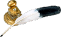

The Main Chamber
He stretched his over-sized limbs in preparation for the coming battle. His dark blood seemed to boil within him as he prepared himself for the bloodlust that was to come shortly. The sky was a dark overcast pall that cast its shadow over the assembled horde. He looked as if he was but a shadow, his skin glistened in places as the ruddy dank light from unknown sources drifted over him.
He knew it would not be long before he would be able to engage his lifetime enemy, the Baatezu. It seemed as if an eternity had passed since the start, actually seven, he did not know why or how it came to be this way, he only knew it always was. The Bloodwar, was eternal, the planes themselves revolved around it. He hideously smiled to himself to think what it would be like without it. He seemed a bit hungry as it hadn’t been since yesterday he ate, he immediately slammed his barbed spear in to the lower back of a passing Rutterkin, snapping its spine and laughed a bit as it seemed to flop around in pain on the ground. He was on the fringes of the great host and sights like this weren’t common since he wasn’t caught.
It raised its pitiful arm in an attempt to ward him off, he merely grabbed it with his large hand and wrenched it off, eating it front of him, which caused the creature to shake and flail even more. As he did this, he kept twisting the spear slowly causing it to shudder in even more pain, as he slowly tore each limb off if it and ate it, until it was but a limbless body. The maggots of the ground seemed to take a delight of the creature as they slowly ate into it, he left it there not caring to waste the strength to kill it, now that he felt satiated for the time being.
In the distance the horn sounded, which called them forward to battle. He looked around and saw the Molydei and Hezrou making sure the Tanar’ri were getting ready to move forward. The Vrock flew overhead, in precision groups. He actually admired them for their cohesion and tact, it just seemed a shame there were not more like them, otherwise the Baatezu wouldn’t stand a chance. He shook his head silently, as he looked at the mess of troops. We should just let a flood pour on to them, which is all we ever do, it seems. At other times it just seems pointless, he thought. This has to be the eternal joke, we could overrun everyone in the planes, we are just too chaotic to do so. The Baatezu, could over run the planes, they have the order to do so, but there is not enough. He seemed to dwell on these things more and more often, which made him think, which made him even more dangerous than the average Tanar’ri.
He received his orders from a Hezrou Commander in the distance telepathically. He was to work with a group of other Babau to a Baatezu regiment from the right side, whom is he kidding we're just going to charge like a howling mob at the nearest point we see them. They were going to attack a place called the Field of Nettles. The countless sight of many forgotten battles that seemed to predate the Bloodwar it seemed. Never the less, he made himself ready as he felt the familiar blood lust creep up in to him, making feel more powerful than ever before, he was the strongest of the Ebon Death that were gathered, there were over 15 of them and he was the leader. He wasn’t foolish, he just knew what to do, they teleported to the site and made ready...
He looked over and saw the fiendish made landscape from the dead bodies of the slain from time immemorial. But he looked at his unit and made ready to go right down a small narrow valley in the distance, he spied what seemed to be a whole battalion of Baatezu. Spinagon running in lockstep, Flying Red Abishai keeping air cover and three Cornugon Captain bring up the rear. His eyes lit up and led the attack, they were nearly even in numbers, but the Tanar’ri made up in sheer power, the Baatezu predictably had a laid out plan that quickly cut his unit down a bit. Crilaxion was enjoying it immensely, he skewered Spinagon left and right, his barbed spear making their agony that much greater. He made his way directly to the Cornugon and like howling madness himself he put everything in to it. He took numerous hits and slashes especially from the hated cold wrought iron pig stickers they used.
It seemed to go on forever, the hacking and slashing, the maiming and the dying, until finally his enemies laid slain about him, there were only him and one other, who seemed to be wounded beyond belief. His lower back was ripped open, his left leg was peeled off from acid and both arms were crushed. He limped over to it. He knew him as Ar’Tryusu and looked at him in its eyes as they looked back, seeing and sensing its pain, he lifted his leg and kicked him, hearing him yell out, he kicked it again slowly and methodically. He heard the sounds of battle in the distance, but he did not care. Eliciting more and more howls of pain to which Crilaxion started to laugh at its pain and agony, he couldn’t help himself and kept going until, he himself let out a cry of pain and agony that he had never felt before. His victim lay there stunned as he watched what transpired before it.
It is one of the most rare sights that could ever be seen on the lower planes, the transformation of a Tanar’ri of one form to another. He hands went to either side of his head and pressed against it, as if holding it together. The curved bone atop of his head felt like it was being driven back in to his head as it disappears, which in reality was happening. His thoughts were turned to the madness as if they were swept up by the howling winds of Pandemonium itself. He prided himself on thinking and being smarter than the rest of his bretheren, but he could no longer think, he just suffered pain beyond imagining until it just consumed his whole being.
As this continued he saw and felt images of all the pain and suffering he had caused throughout out the millennia of his existence. From the time he was a lowly Mane, to Rutterkin to Chasme and finally Babau. But for the first time, he recalled himself as a man, a silver armored warrior that died in a forgotten battle in an unknown land. A fear crept it in to the dark corners of his soul, as he saw a vague mountain that encompassed all to which he was flying which filled him with dread and despair, it was the antithesis of his very being, yet for some reason it had a familiarity to it. He seemed to move closer and was welcomed by it, until the very last moment, he felt falling downward through the sky for eternity, the calm water became boiling water and burned him until he was no more.
He remembered it all, the killing, maiming, torturing and a new feeling crept in, one that was never known before, a feeling of remorse for what it had done, which made it even worse for Clarinix and drove him even further to despair and pain. It was unrelenting and timeless, it was as if each deed that was done, he paid for twice over and was shown the consequences of his actions. Remorse gave birth to guilt and was forever burned in its foul soul. Before he could think even further, he then felt his limbs stretch and his hill giant sized head, hands and feet shrink. His skin, bone, muscle and sinew pulled and shrunk as it did so and at the same time his limbs stretched outward. His face, which was once skeletal as Charonodaemon, became a dull, pale yellow color as its nose and mouth stretched outward. He felt the skin harden to steel, and his eyes became beady as flesh filled in to his hollowed out eye sockets. His skin felt like it was being pulled off of him as he felt and saw hard coarse feathers appeared where his skin was. His back was pushed together and mashed as his spine felt as if it was being split down the middle as his skin and bones were pulled outward from him by an unseen hand, till they spread out from him in behind. Still the feelings and thoughts never left him. He was dimly aware of these transformations before, but he never had such thoughts before, they were weak and alien to him, but it also reminded him of what he once was. He did not know if it was another trick of the Abyss, but something told him it was not right. Suddenly everything was stopped.
There was silence and he felt the cold blood soaked ground at his face and body. He also felt something wet coming from his eyes for the first time. He was dimly aware they were tears, a forgotten memory from long ago, when it was once human, thousands of years ago. He did not know if it was from pain, the feelings or both. He laid gasping for air and was still as death. After what seemed like days, but only moments passed by, he twitched his hands and fluttered his wings. It was strange, it seemed as if he was this creature all his life. He instinctively knew what to do with his newfound body. He looked down the length of his side and knew he had ascended to the hierarchy of the true Tanar’ri, a Vrock, the Tanar’ri of the air. He stood up slowly, feeling his strength he waved his wings and felt the currents of the air cause a breeze. He only heard faint sounds of battle.
To his side, he heard faint breathing, it was the Ebon Death he was torturing before. He was about to start once again, when he looked in to the featureless eyes of flame and felt pity for it. It couldn’t move, couldn’t speak, it was wretched but not dying. For some reason, he did something he was never meant to do, he raised his spear and mouthed the words, “I am sorry.” And drove it down in to him to put it out of its misery. At that moment, he let out a primal scream that came out like a hideous squawk, which bewildered him for a moment, until he realized it was he.
He continued to stare at Ar’Tryusu as he left his mercy killing spear in him for a while, wondering what made him do that. He pulled it gently away and looked around him. He noticed the piles of the dead around him, piled hundreds of feet high from countless battles, this was more akin to Acheron, he thought. He also thought for the first time, if this was all there is to it. The waste of so many lives for no other reason.
Where once was chaos and destruction, there now dwelt self-loathing of his own crimes and yes, even regret. Something went wrong in the transformation and he couldn’t understand it, he was fearful for the first time in his long unlife. He survived the horrors of the Abyss through all his long years by thinking a bit more clearly and not being so rash to action, this labeled him a bit less than Tanar’ri, but it made him more noticeable to those who needed him.
He didn’t know what to do and instead he just sat down and put his hands to the side of his head and rocked back and forth, pitiful mewling noises came from him. His thoughts kept racing back to his vague memories during the transformation of Mount Celestia. It kept nagging at his thoughts and he was frightened by it. If it was ever possible, this is perhaps what happens when a Tanar’ri goes insane.
“Heheheheh, what have we have here, a scum Tanar? Lets see what he is made of? Perhaps we can some sport after all, since the rest of them have been pushed back. The Baatezu Legions will always be triumphant.” This came from a Cornugon leading a troop of 6 Red Abishai.
He looked up with from the ground; there were actually small tears in its eyes. “I can actually do this.” He thought to himself. He looked at him, “Did you ever think of the point to this madness, look around you, where does this ever get us.”
The Cornugon actually took a step back in disbelief. He was unaccustomed to having a True Tanar’ri speak to him, much less make conversation. He stopped dead in its tracks in shock.
“Think upon it, perhaps in time there will be no need for it.” With that, he vanished, leaving the Baatezu troops to stare at their Cornugon commander.
He teleported himself to the Plane of Infinite portals, near the underground battleground. Where countless battles are always fought for control of the place, where it is said the winner will be made in to a Tanar’ri lord. He never believed thinking it so many screeds, he fought their once before and made his way to the torture chamber, carefully avoiding the others, he felt great trepidation as he neared the place and felt queasy. He knew of the power contained in it, as it contained the holy symbols of the upper planes.
He walked in and fought against the fear he felt and once again, the foreign emotions of guilt and regret grew stronger. He was nothing anymore, he was not a Tanar’ri, otherwise why would he be like this, and “What am I What have I become? Is this torture anew from this plane? When will it end?” He screamed these questions out loud, heedless of who would hear them. Fortunately, no one did, as another battle took place for control.
His eyes settled on a symbol of a mountain with a feathered serpent wrapped around it. Without thinking or knowing why he reached for it and wrapped his hand around it and screamed with pain unending, what he felt before during the transformation was nothing to what he felt now, if that was at all possible. It drove him even further beyond the edge, but he could not drop it or let go. In rage and fury he ran from the room screaming, forgetting he could teleport away. He barreled in to a Hezrou looking for troops for the never-ending Bloodwar. It took a look at him to say something but saw what was happening and took a step back. He continued onward and out, where he stood upon the light red soil of the plane, his hand still smoked and smoldered, driving him in to frenzy. The alien emotions he felt before increased a hundred fold further causing him to go further insane in pain and despair.
This went on for days, he could not remove it and he kept teleporting to abandoned areas, avoiding others as he could, fighting and killing when necessary and always without emotion, only to defend himself, never initiating combat. He was able to piece together what happened and recalled recollections of books he read of the outlands, without realizing it, he appeared in the outlands near Excelsior.
He only dimly saw the gate town, only realizing that it was the town from the descriptions he had read about. He seemed to be in the center of the town. The tall majestic buildings filled him with a sense of foreboding and fear. Here he knew his sworn enemies would follow him through the planes if necessary, their holy auras filled him with dread. In defense he held up his smoldering hand that still smoked from the Holy Symbol of the torture chamber, causing a few of the more learned to hesitate. Armored warriors and Clerics poured in to the street as shouts of “Tanar’ri are attacking. Tanar’ri are in the town.” Everyone must have thought a full-scale invasion was coming as everyone came out ready to lay down their lives in defense. Some were perplexed as they saw a lone Vrock running around the square squawking in pain from the burning Holy Symbol that smoked eternally from his hand, some actually stopped and stared in disbelief, these were the very few.
The rest were trying to strike him down before anything could be done. He actually welcomed it as it would put him out of its misery, but instinct took over, surprisingly, he never struck back as he had a vague understanding of why, he recalled the countless ones he tortured and killed in his time. In desperation from wounds, fear and self-preservation, he ran under an archway with the symbol of a mountain at its keystone and disappeared.
The Paladins and Clerics laughed at its stupidity, they knew where it would lead, the Silver Sea of Holy Water. He would be burned before he could fly out of there, some were openly giggling, until an aged Cleric of Tyr stood up and raised his right hand to quiet them down. “Have you not realized, he didn’t have a key to go through the portal” The assembled stood in shock at this revelation, they were fearful that anyone could go through it and attack. A small girl of about 12 years old stepped forward, wisdom shown through her eyes, “Yes he did, he was a Tanar’ri with guilt and regret, that was the key to go through.” With that they all turned to the portal and looked on in awe and disbelief, even the Paladins, the archenemies of the Tanar’ri, bowed their heads at this revelation.
He didn’t know he was headed, he just knew the burning agony of his limb, he had long given up on ridding himself, and instead he steeled himself against the pain by trying to bear it. It didn’t help, he could almost bear the pain itself, it was the feelings of guilt and remorse compounded with the hopelessness made him wish to die even quicker. His eyes adjusted to the light of semi darkness, he briefly heard the sound of the calm waves beneath and in the distance he once again saw the mountain that haunted his dreams.
He quickly fell, not even bothering to try and fly and hit the sea of holy water with a mighty splash. The pain of his hand was nothing compared to what he felt now, white hot flame covered him as if his was skin was flayed from him, but for the first time, he actually felt at peace, knowing he was finally going to be put out of his miserable existence. For the first time he actually felt sorry for the pain and suffering he caused as he lived each moment again and again. He laid on the water spread eagled with wings and arms outstretched as he slowly burned away, when he felt a slight rustling of water beneath him, which seemed to carry him, he closed his eyes and drifted off to nothingness
Or so he thought, what seemed like ages of pain that never went away, he opened his eyes and looked upward. He gazed at an incredibly tall tower, sheathed in blue flame. He laid at its entrance upon a rocky shore and noticed his pain had was not nearly as great, in fact it seemed to subside greatly. He said thank you out loud, but to no one in particular, he looked at this hand and saw that the holy symbol was on the ground and his palm had its image burned in to his palm. For some reason, he didn’t seem to mind it. He looked down at his body and found it whole, but his features did not seem as harsh, but softened some how. He walked out in a long featureless hallway where this slight blue flame forever burned and came upon a small circular chamber where he sat.
For once the pain had let go of him, but was always in the back of his mind, to remind him of what he was. He sat down in the middle and closed his eyes and thought of everything that happened. In time he, dwelt upon the thoughts of the flame as a purifying fire, which burned away what he had done or at least tried to do, he felt the ache as he relived his crimes over and over again, but instead of running he embraced it. This went on for over 1000 years, he never cried out or made a sound, he accepted each one and felt a bit more at peace as they passed. The faces and lives passed before him fleetingly, but he reminded himself of what had happened, until they came no longer.
He opened his eyes and still faced the same way and the room remained unchanged, he had forgotten what he even looked like. He walked back out in to the corridor and heard voices and footsteps as they echoed across the strange floor. They were talking about strange happenings within the tower. It was so long that he just stood there listening as if dumbstruck, he noticed huge bear like creature and three dog like humans conferring among themselves when they stopped and stared at him, “What in the Holy Mount is a Vrock doing here?” They made ready to attack when the Warden Archon held up his hand to stop them.
They all looked at him and walked closer and saw him in a better light, “I don’t think he is what he appears to be.” Said the Warden, they looked at him and seemed to agree. His skin had turned a pale white blue, the feathers of his wings from coarse brown and black to dark and deep blue. His talons were still there, but they were no longer black, instead, they were a deep dark blue as well. The most notable change was his head, his features were soft and no longer harsh, and they bore a regal bearing when looked upon. The eyes were composed of a slight blue flame when stared at for a while, suggesting he was here for a very long time. He looked as if he was an ancestor of sorts to the Sword Archons of Mount Celestia, which who knows, perhaps he was. After further inspection, he faintly resembled a Vrock in appearance.
They asked him in excited voices how he came to be, he explained to them as truthfully as possible. They all said in unison, “Praise be to the mount.” He held up his hand holding the holy symbol that no longer burned and asked where this could be found. The warden archon whose name is Franalan said that is the sign of Jazzum the Feathered serpent of the mount, he would take him there as he had the permission and rights to do so as keeper of the portals of the mount. He told the hound archons of what he was going to do and they all excitedly wished him the best, as they had never seen such a sight, although there were always rumors of such occurrences.
They walked back to the entrance and he looked upon the sea with reverence and the beauty it held and no longer held such fear as when he was first burned. He looked to Franalan and asked in a small-excited voice, “I know this may sound strange, but may I jump in the first and feel it for the first time. I am no longer afraid of this and would welcome it.” Franalan smiled, of course, take all the time you need.” Franalan felt at ease with him and watched as he flew up in the air with practiced ease and dove straight in to it with such grace and precision, it appeared he had done this countless time before.
After about half an hour he readied himself and let the waves bring him back to the tower where the warm flames of the place dried him off very quickly. Franalan held out his hand to which Crilaxion held on to it and they teleported directly away to Jazzum’s temple on Mount Celestia.
They appeared before a small marble temple that was resplendent with white marble. Flowers were in bloom that sported a myriad of colors that defied description. An aura of peace and awe permeated the temple, a somber gong that seemed to echo with timelessness rang and the doors opened before them. An ancient Couatl stepped out form Flanaran bowed and Crilaxion for the first time bowed out of respect and not fear, he stayed in the position until he was asked to stand back up, for which he nodded and did so. Franalan bade them good day and looked ay Crilaxion, “Good luck my friend, it was an honor to have met you. Keep strong and true and you will not fail.” Afterwards he disappeared down the road.
The Winged serpent looked at him quizzically for a long time, whose eyes seemed to bore in to him. He did not look away or seem embarrassed, as he knew what he was looking at, his soul. “I am not proud of what I had done, I only feel pain and remorse at what I had done. I have come here asking for help and forgiveness to right the things I have done. I know the road shall be long and arduous and I shall endure for it as long as I shall be. I know not why I have come here, I shall not ask why, only to accept. I have been blessed by this holy symbol that is forever burned in to my hand by my own free will.” He held up his hand and there was the outline etched in to his skin for all time. “I wish to join your order
“I am Treylizzan and welcome to our humble abode. We welcome and honor you in our presence. I say this with no disrespect, you are but a child in our ways, but we will be here to guide you along that path, which will be long and hard. I see you have endured much, but I can see in your eyes the wisdom and knowledge you have gained from it. I am sorry it was such a hazardous journey to take, but I can see if you have endured this far and still kept striving, then you are certainly welcome to a place here.”
He nodded sanguinely, “I shall certainly try my best and learn from my mistakes, sir.” he bowed his head and let him walk him in to the temple.
He stayed for over five hundred years, learning, studying and praying. Some time his chaotic side would break out and he fought to control it and only once did his evil heritage almost break from within. He quenched by jumping in to a vat of holy water much to the detriment of the clerics. He panicked and did not wish to fall back again, but he understood the lesson, it was his choice, which he took to heart and never forgot it again.
In time, his warrior like ways seemed to take hold once again and forced a kind of wanderlust. He met and made friends among the Lantern and Hound archons and assisted them several times in repelling invaders from Mechanus and Acheron. He even provided information regarding the Abyss’s Plane of Infinite Portals, but more importantly, he began to admire the duty and dedication of the Paladins in service to the Winged Serpent Jazreel. Their ideals, conviction and devotion to a cause to which they believed in took hold of him and he began to study among their order.
For the next one hundred years he immersed himself in their training, night and day. He learned his own abilities and deity granted ones as well. This continued onward until he was fully ordained as Paladin of Jazreel, whose holy symbol was forever burned upon his palm. During his time there, he made many friends as they came to see who and what he was, he was humble to the mighty Solar that had come to visit the temple one day to the lanterns that were always present. On such occasion he would go to the Silver Sea and gaze upon the countless white pebbles lying upon the beach before him. His heart filled with sadness, as he knew the meaning of these, the failed lanterns that gave up hope and dies whether in combat or hopelessness. It made him sad, but he knew the meaning that was written as it were, “I have been given a second chance, why, I know not, but I shall not give up, I have finally walked upon and found a brief respite that I now know as peace.
Upon his Ceremony of Initiation, he received his blessing of Knighthood by his assembled peers and the blessing from Jezreel herself. For which he was eternally grateful as he tunred to leave, he heard a whispered voice upon the wind to which he only had the privilege of hearing, “Welcome back.” He turned around suddenly as if recognizing a voice from a very long time ago, which had such a familiar ring to it. “Home, I have never been here before.” He looked puzzled but quickly concealed it and walked off.
He spent time with Paladin Order of Jazreel and quickly rose up the ranks. His innate knowledge and tactics of the infernal creatures helped many times in battles and skirmishes. He grew to love his new home and fought for it fiercely. One thing he admired was the ideals it housed such as everyone choosing their own way for which that right was defended.
In time, they wished to have someone go to Sigil, to see what information could be gleaned form the going on of the Cage. He stood up and volunteered himself, knowing he could be of service, heedless of his own life, for which now had meaning. They were skeptical at first since he would certainly stand out, so instead of turning him down, they fashioned for him a ring of Aasimar guise. Essentially, for all intents and purposes, he would appear as an Aasimar to reflect his mixed heritage. He stands about 5’8” tall, with deep blue eyes that shine with an inner bluish flame with near shoulder length brown hair. From the middle of his back sprout a pair of 6 feet white wings.
He left for Sigil the next day joined with the Mercykillers. He admired their military precision and their relentless pursuit of justice, to the ones who deserved it. He was very efficient and ruthless in his pursuit, however, he made sure only the guilty were found. He fought and was nearly killed countless times when he went against the majority; he tried cleaning up some of the more corruptible elements of the faction. Ones taking bribes, hires for murder, etc. He also caused some friction with the Harmonium as they were always after the Indeps. There was more than one time he stepped in to their defense as they were unfairly targeted by the Hardheads for some trumped up charge. He would always show at their trial in their defense, if they were innocent. As a result, he made quite a few friends with them, which also helped him track down fugitives and criminals.
He quickly rose through the ranks to become Justiciar; the majority of the high ups knew something of his background, but they didn’t mind, as he became one of their best field men.
The next few decades of his life, were profound ones for Clarinax in which his identity and memories became a bit unstable at times. He would often have nightmares and flashbacks to a time long buried and forgotten in the countless time of his existence. He would have vague recollections of his mother and her death at the hands of Automatons and Harmonium from Arcadia during the loss of their third plane to Mechanus or was that only a few years ago, he wondered. It seemed that his long repressed memories were slowly coming back before his fall thousands upon thousands years ago, before he slid in to the Abyss. It now seems that he was a Paladin once before in a time long forgotten but to who, he had no idea. He asked his officers for extended leave back to Mount Celestia as his work was becoming unstable and careless at times, he promised that he would return, but it would do no good for them if he wasn’t at this best. He finished up his last field assignment and granted him indefinite leave as he was a paladin, they accepted his word that he would come back.
It just seemed all too confusing to him and he could not figure it out. He finally could no longer take it any more and he went to see the High Cleric of Jezreel, Treylizzan the one who had accepted a long time ago and told him of his pain and suffering at the hands of such conflicting memories. After listening he asked Clarinax to meditate while he went to find out what could be done.
Without realizing it, he prayed for weeks while Treylizzan consulted his peers. Finally at the end, it was decided to purge his mind of the early memories and this was done. It was a complex and dangerous process for which he accepted the full responsibility. The danger was his Tanar’ri heritage would come through and purge everything else, he told them, if this was to happen to destroy him utterly to prevent any other evil from occurring again in his name. The magical process lasted for thirty days. In the end, the results were unexpected; instead of purging his former life he remembered all of it instead of his present one. He was a paladin of Tyr and not Jezreel and his name was Ecitsuj Thgir. The only remnant of the process was a clear blue stone. It seemed he was present up until whatever deed caused him to become a fallen paladin, as he was still able to sense his mission and ethos.
He looked around in bewilderment at the assembled Couatls before him fearfully not realizing what had happened. They patiently explained to him what had occurred and told them it can always be reversed by holding the blue stone in his right palm with his blood on it and concentrate on remembrance. But they also warned him of all that would transpire and that his memories could become confused once again. He thanked them for all of their help.
Afterwards, he prayed to Tyr for the first time in what seemed to be an eternity, strangely he replied, saying it his own free will and it was he to decide whom, either Tyr or Jazreel he would follow. He would accept either decision but one it has been made, it would be final. He agonized over it and tried to put it out of his mind, so in order to give him a brief respite, he returned back to the Mercykillers and spoke with his Factol, the mage Nilesia in private who swore to secrecy that nothing of this would be told. Realizing a good warrior in the cause of justice was not to be let go, she agreed to him asking that he return as Ecitsuj Thgir, but he would have to start form the bottom ranks to which he agreed. Happily he returned to his work, but now it seemed he was more troubled than ever. Does he continue on as if nothing happened as a Paladin of Tyr or to Jazreel?
Out of habit, he continuously held his blue stone for which he fastened a lead chain around and wore it inside his clothing. He knew he was granted what most creatures would call a wish, he was given a second chance that he must choose, and gods only have their wisdom to keep to themselves, he knew it would only be a matter of time, before he must choose between the two.
|
Return to The Main Chamber |
 |